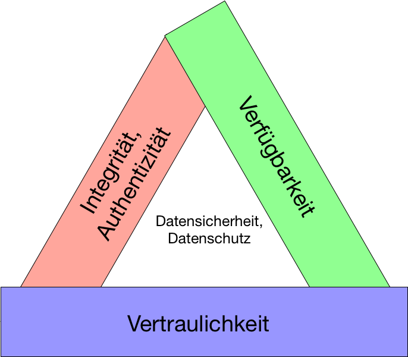

{% extends "../_base_template.html" %}
{% block title %}Lektion 8 - Datenschutz {% endblock %}

{% block sections %}
<section data-markdown>
<textarea data-template>
<i class="fas fa-graduation-cap"></i> M151 - DB in Web-App einbinden
=============================

Heutiges Ziel
--------------

* Sie wissen, was der Begriff „Datenschutz“ bedeutet
* Sie kennen die Begriffe „Vertraulichkeit“, „Integrität“, „Authentizität“ und „Verfügbarkeit“
und können diese erklären
</textarea>
</section>

<section data-markdown>
<textarea data-template>
<i class="fas fa-flask"></i> Datenschutz
=============================

**Daten schützen**

„Datenschutz“ - „Datensicherheit“ - was bedeutet dies?


_Fragen an die Schüler:_

* Was bedeutet für Sie Datenschutz?
* Was bedeutet für Sie Datensicherheit?
* Vor wem müssen Sie Daten schützen?
* Welche Daten müssen Sie schützen?

<i class="far fa-hand-point-right"></i> Wir sammeln Input in der Klasse in einem **Padlet**:


https://padlet.com/alex_schenkel/kgu9m119p67b <!-- .element class="enlarge" -->

</textarea>
</section>

<section data-markdown>
<textarea data-template>
<i class="fas fa-flask"></i> Datenschutz
=============================

**Daten schützen**

„Datenschutz“ - „Datensicherheit“ - was bedeutet dies?

_Fragen an die Schüler:_ (Antworten vom letzten Jahr)

* Was bedeutet für Sie Datenschutz?
  * Informationen schützen
  * Technologischer Schutz
  * Niemand hat Zugriff auf mein Konto
  * Niemand weiss, was ich (am Computer) mache
  * Daten vor Missbrauch schützen
* Was bedeutet für Sie Datensicherheit?
  * Daten vor Änderungen /  Löschen schützen (vor "Sauron")
  * Nur ich weiss meine wichtigen Daten
  * Das Recht, vergessen zu werden
  * Daten werden sicher abgelegt: z.B. Passwörter als Hash
  * dass ich nicht überwacht werden / persönliche Daten bleiben persönlich
  </textarea>
</section>

<section data-markdown>
<textarea data-template>
<i class="fas fa-flask"></i> Datenschutz
=============================

**Daten schützen**

„Datenschutz“ - „Datensicherheit“ - was bedeutet dies?

_Fragen an die Schüler:_ (Antworten vom letzten Jahr)

* Vor wem müssen Sie Daten schützen?
  * vor Hackern / vor Verbrechern
  * vor allen "nicht befugten" Leuten
  * Vor dem Staat
  * BigData: vor grossen Datensammlern
* Welche Daten müssen Sie schützen?
  * persönliche Daten (die nur mich angehen)
  * geschäftsrelevante Daten
  * Staatsdaten (z.B. Sicherheits-Entscheide, Steuderdaten)
  * Verhalten am Computer

</textarea>
</section>


<section data-markdown>
<textarea data-template>
<i class="fas fa-graduation-cap"></i> Datenschutz
=============================

* **Datenschutz** bedeutet, Daten und Informationen vor **„unberechtigtem Zugriff“** zu schützen.

* **Datensicherheit** bedeutet, dass die angeforderten Daten
  * **vollständig (Integer)** sind und
  * **von der angegebenen Quelle stammen (Authentisch).**

<i class="far fa-hand-point-right"></i> Was sind „Daten“ aus Sicht einer Web-Applikation?

* Inhalte aus Datenbank, welche auf der Webseite aufbereitet werden
* Dateien, welche via Web zugänglich / downloadbar sind

**Begriffe**

* „Vertraulichkeit“?
* „Integrität“?
* „Authentizität“?
* „Verfügbarkeit“?

(Erklären Sie!)

</textarea>
</section>

<section data-markdown>
<textarea data-template>
<i class="fas fa-graduation-cap"></i> Die drei Grundpfeiler der Datensicherheit
=============================



<i class="far fa-hand-point-right"></i> Lesen Sie nun selbständig die nächsten Folien
zu den 4 Grundbegriffen des Datenschutzes (bis Folie 12, "Schutz von Daten: technische Massnahmen")

</textarea>
</section>

<section data-markdown>
<textarea data-template>
<i class="fas fa-graduation-cap"></i> Vertraulichkeit
=============================

* Daten sind vertraulich, wenn sie **nur Befugten in zulässiger Weise zugänglich** sind.
* Informationen müssen also **klassifiziert** werden:
  * Welche Daten sind öffentlich?
  * Welche Daten stehen nur einem bestimmten Benutzerkreis zur Verfügung?
  * Darf dieser Nutzerkreis die Daten bearbeiten, oder nur lesen?
* Je nach Klassierung der Daten in eine Vertraulichkeitsstufe sind strengere Massnahmen zu definieren,
  die die Vertraulichkeit gewährleisten, **zum Beispiel**:
  * Helpdesk-Mitarbeiter müssen eine **Vertraulichkeitsvereinbarung** unterschreiben, dürfen dann aber alle Daten einsehen
  * Vertrauliche Daten müssen verschlüsselt gespeichert, transportiert und archiviert werden
  * Normale Mitarbeiter dürfen keinen Zugriff auf Personalakten haben (Lese-Schutz), Mitarbeiter des Human Resource schon
  * öffentliche Daten müssen vor falscher Manipulation geschützt werden (Schreibschutz)
</textarea>
</section>

<section data-markdown>
<textarea data-template>
<i class="fas fa-graduation-cap"></i> Integrität und Authentizität
=============================

**Integrität** bedeutet:
* dass jedes Objekt der Informationsverarbeitung **vollständig, unverfälscht und korrekt** ist.
* dass diese Objekte **nicht verändert**, verfälscht oder gefälscht werden können.

<i class="far fa-hand-point-right"></i> Es wird unterschieden zwischen Integrität von Programmen und Integrität von Informationen:

**Integrität von Programmen** bedeutet:
* dass nur autorisierte Funktionen ausgeführt werden können (Nur Admins dürfen Benutzer verwalten, z.B.)
* dass die Funktion auch (nur) das tut, was deren Bestimmung ist
* dass Schutzmassnahmen getroffen werden, um das Verändern der Funktionalität zu verhindern
  (z.B. durch Viren, Backdoors, logische Bomben...)

**Integrität von Informationen** bedeutet:
* die Daten werden korrekt verarbeitet
* die Daten sind vollständig
* die Daten sind aktuell

</textarea>
</section>

<section data-markdown>
<textarea data-template>
<i class="fas fa-graduation-cap"></i> Integrität und Authentizität
=============================

**Authentizität** bedeutet:
* den Nachweis zu erbringen, dass jemand oder etwas wirklich das ist, was es vorgibt
* vereinfacht gesagt: dass man sicher sein kann, dass die Datenanforderung vom dem stammt, den er vorgibt zu sein.

<i class="far fa-hand-point-right"></i> Grob zusammengefasst:

**Integrität bedeutet, dass das Programm richtig funktioniert / die Informationen korrekt sind.<br />
Authentizität bedeutet, dass die Informationen nachweisbar aus der angegeben Quelle stammen.**
</textarea>
</section>

<section data-markdown>
<textarea data-template>
<i class="fas fa-graduation-cap"></i> Verfügbarkeit
=============================

Daten müssen **verfügbar** sein, d.h. man muss auch wirklich darauf zugreifen können.

Daten müssen aber **nicht immer GLEICH** verfügbar sein:
* Beispiel: Real-Time-Börsendaten: Im Börsengeschäft geht es um Millisekunden. Stehen dort Daten nicht sofort zur Verfügung,
  kann dies zu Verlustgeschäften führen.
* Beispiel: Monatsstatistik: Eine Monatsstatistik muss 1) nicht in Millisekunden verfügbar sein, und 2) reicht es,
  wenn diese in den nächsten Tagen nach Monatsende verfügbar ist.

<i class="far fa-hand-point-right"></i> Das bedeutet, dass Sie je nach Anforderung entsprechende Massnahmen ergreifen müssen,
um die geforderte Verfügbarkeit garantieren zu können.
</textarea>
</section>

<section data-markdown>
<textarea data-template>
<i class="fas fa-graduation-cap"></i> Schutz von Daten
=============================

Für den Datenschutz und die Datensicherheit bestehen verschiedene Möglichkeiten:

<strong>§</strong> Rechtliche Regelungen
------------------------

Rechtliche Regelungen und Vorschriften definieren die Rahmenbedingungen,
wie mit (ihren) Daten umgegangen werden darf.

Dies beinhaltet:

* Gesetzte (siehe nächste Folien)
* interne Vorschriften (Non-Disclosure Agreements etc)
* Auskunftsrechte und -Pflichten eines Users / Anbieters
* Generell: Vorgaben, **wer** darf **was** in **welchem Umfang** und **wie lange** mit Daten machen.

</textarea>
</section>

<section data-markdown>
<textarea data-template>
<i class="fas fa-graduation-cap"></i> Schutz von Daten
=============================
<i class="fas fa-cogs"></i> Technische Massnahmen
------------------------

Neben Regulatorien müssen Sie natürlich auch auf technischem Weg den Datenschutz und die Datensicherheit gewährleisten. Wir sehen die Möglichkeiten auf den nächsten Folien.

<i class="far fa-user"></i> Speicherung von Daten
------------------------------------------------------

Der beste Datenschutz ist, Daten **nicht** zu speichern: Was Sie nicht haben,
kann Ihnen auch nicht abhanden kommen:

<i class="far fa-hand-point-right"></i> Speichern Sie daher nur Daten, die Sie auch
wirklich benötigen, _solange_ sie sie benötigen!

* Brauchen Sie wirklich die private UND die mobile Telefonnummer Ihrer User?
* Brauchen Sie wirklich eine Sozialversicherungsnummer UND ein Geburtsdatum?
* Können Sie Personendaten nach Abschluss einer Support-Anfrage nicht wieder löschen?
</textarea>
</section>


<section data-markdown>
<textarea data-template>
<i class="fas fa-graduation-cap"></i> Technische und organisatorische Massnahmen zum Datenschutz
=============================

Wie wird nun dieser Datenschutz sichergestellt? Die Vorschriften definieren nicht, wie die Daten geschützt werden müssen,
sondern nur was und wie stark dieser Schutz sein muss.

**§ Stellen Sie Regeln auf**

Viele Datenschutz-Massnahmen lassen sich mit verbindlichen Regeln lösen:

Mitarbeiter im Support z.B. müssen eine „Vertraulichkeitsvereinbarung“ unterzeichnen. Sie kommen naturgemäss mit sensitiven
Daten in Kontakt, dies kann keine technische Massnahme verhindern.
Es muss aber klar geregelt sein, was diese Mitarbeiter mit den Daten dürfen.

Diese Vorschriften müssen Sie allerdings auch durchsetzen / kontrollieren.

<i class="fas fa-cogs"></i> **Technische Massnahmen**

„Vertrauen ist gut, Kontrolle ist besser“: So könnte man technische Massnahmen verstehen:
Durch technische Massnahmen wird sichergestellt, dass die „Vertraulichkeit“, „Integrität“, „Authentizität“ und
„Verfügbarkeit“ auch durchgesetzt werden kann.

Welche technischen Massnahmen kennen Sie, um diese 4 Begriffe des Datenschutzes umzusetzen?

<i class="far fa-hand-point-right"></i> https://padlet.com/alex_schenkel/bvpwovao9zfh <!-- .element class="enlarge" -->

</textarea>
</section>

<!--
<section data-markdown>
<textarea data-template>
<i class="fas fa-graduation-cap"></i> Technische und organisatorische Massnahmen zum Datenschutz
=============================

**Technische Massnahmen** zum Datenschutz

(mögliche) Lösung der Frage von oben:

* Vertraulichkeit:
  * Benutzerverwaltung implementieren
  * Rollen-System implementieren
  * Rechte-Verwaltung implementieren: Zugriff auf Daten nur für berechtigte Benutzer / Rollen gewähren.
  * SSL-Verschlüsselung
* Integrität:
  * Datenbank-Transaktionen
  * Datei-Hashes (sieht man viel auf Download-Portalen)
  * Kryptographie-Signaturen
* Authentizität
  * Benutzerverwaltung
  * Login-Mechanismus
* Verfügbarkeit
  * Hardware-Redundanzen (doppeltes Führen von wichtigen Komponenten)
  * Rechenpower (bei intensiven Kalkulationen)

</textarea>
</section>
-->

<section data-markdown>
<textarea data-template>
<i class="fas fa-graduation-cap"></i> Rechtliche Vorschriften
=============================

**Datenschutzvorschriften** bestimmen nicht das WIE, sondern nur das WAS und IN WELCHEM MASSE geschützt werden muss.

Als Grundlage dient immer das **Schweizerische Datenschutz-Gesetzt (DSG)**:

https://www.admin.ch/opc/de/classified-compilation/19920153/index.html

Es gibt aber auch Vorschriften, die verlangen, dass z.B. gewisse Datenbestände (Buchhaltung, Log-Daten) eine bestimme Zeit lang aufbewahrt werden.

Aktuelles Beispiel: **DSVGO** (Datenschutz-Grundgesetz der EU):

https://dsgvo-gesetz.de/

Hier wird vor allem geregelt, wer was mit welchen Daten wo/mit wem machen darf.

<i class="far fa-hand-point-right"></i> Datenschutzvorschriften und Datensicherheitsvorschriften sind ein sehr wichtiges Instrument, und die Grundlage für die technische Umsetzung: Sie definieren schlussendlich
die technischen Massnahmen, welche Sie treffen **müssen**.
</textarea>
</section>


<section data-markdown>
<textarea data-template>
<i class="fas fa-flask"></i> Angriffe von aussen
=============================

Kritisch wird die Situation, wenn Ihre Web-Applikation und somit einen Teil der Firmendaten im Internet verfügbar sind.
Hier reichen Regeln und Verbote nicht. Auch einfache Passwortabfragen reichen vielmals nicht,
um einen genügenden Schutz zu gewähren.

**Hausaufgabe**

Überlegen Sie sich folgendes:
* Vor wem (oder was) müssen Sie Ihre ( öffentlich zugängliche ) Web-Applikation schützen?
* Was für Angriffsmöglichkeiten existieren, um Ihre Web-Applikation zu knacken / an unbefugte Daten zu gelangen?

**Erstellen Sie eine Liste mit Antworten zu diesen beiden Fragen!**

</textarea>
</section>
{% endblock %}
